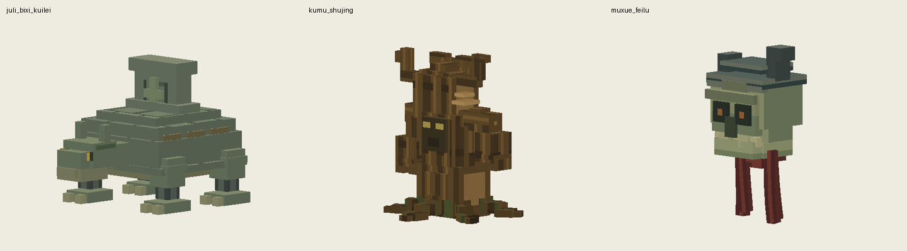
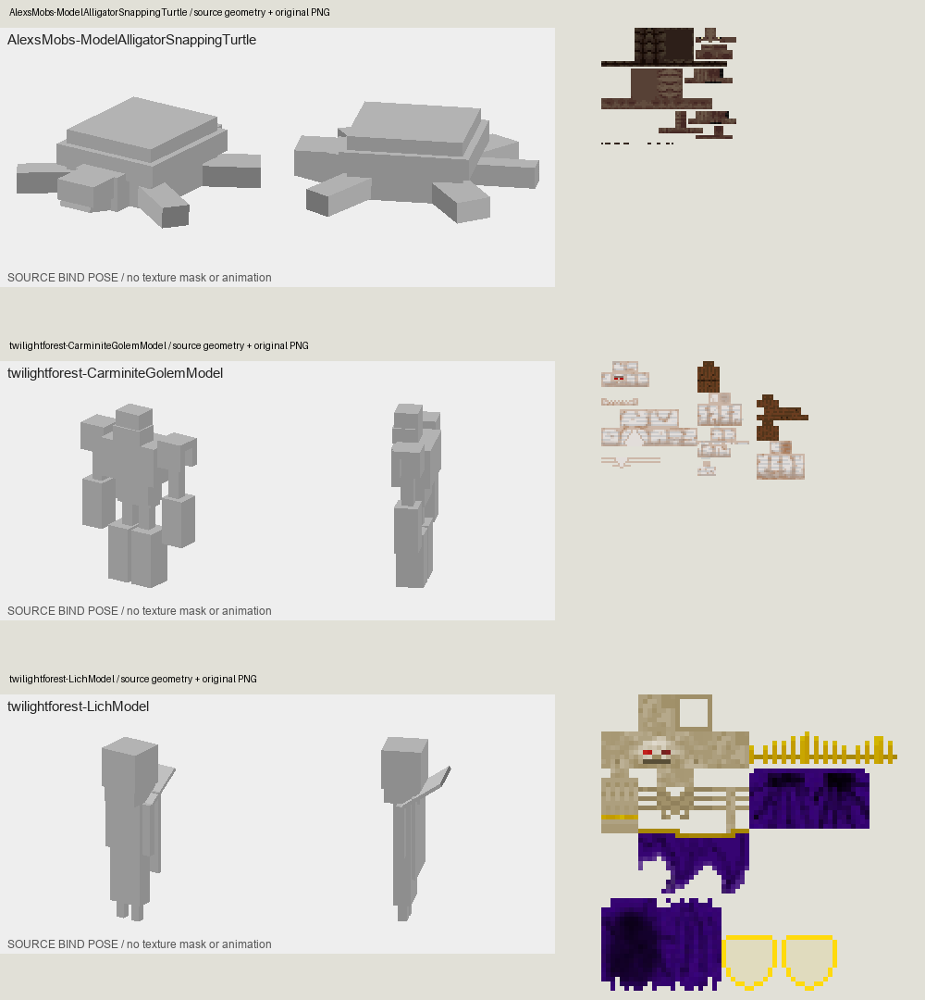

下一批三只：模型与贴图
上一批八只和已上传精英保持不变。本批保留注册、骨架、动作时间轴与玩法。

- 巨力赑屃傀儡：参考Alex鳄龟主壳、腹甲与足根关系：收薄重复盖板、连接颈根，壳面连续分区，石碑、古金甲缘与暗色活塞分开。
- 枯木树精：参考暮色傀儡外壳与连接件的材质层级，保留原有枯树和根系形态：连贯纵向树皮、枝条横向木纹、浅色断面与根部苔色，薄菌盖不再像金属箍。
- 牧血飞颅：参考暮色巫妖眼窝、颌部与骨色主次：收薄眼窝凸块及盔边，骨面、盔甲、颈部残躯分开；垂挂组织变细并保持原有摆动。
本次实际查看的参考
源模型灰模与原始PNG配对查看，不是参考模组的游戏截图。仅学习组织方式，没有复用外部像素。研究累计未达到1000只。

Alex鳄龟模型源码 · 暮色森林官方资源源码
检查：三只23条动画软件回放、UV边界/重叠、骨架兼容、每0.25tick离地边界、生成源可复现。实机检查仅覆盖正面/45°和重载，完整自然战斗待验证。